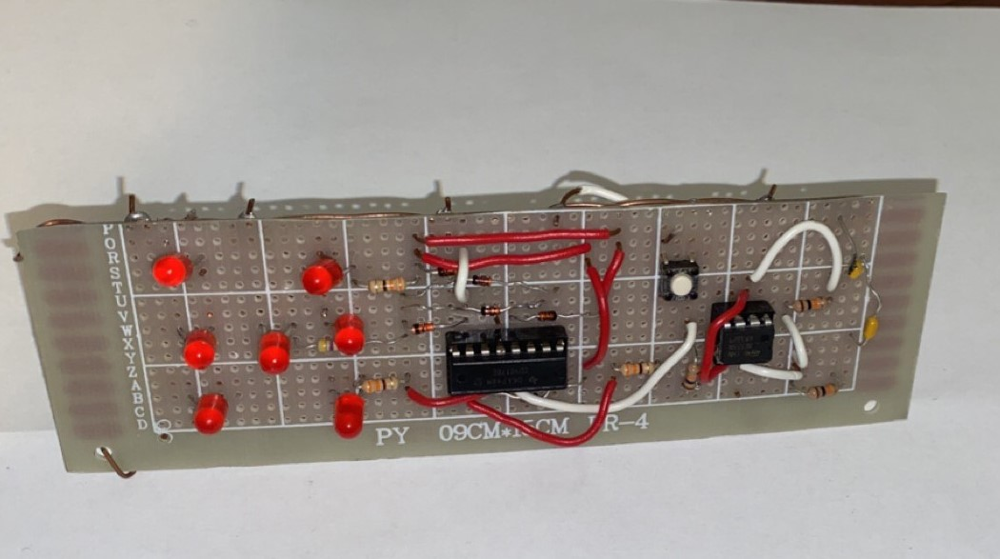
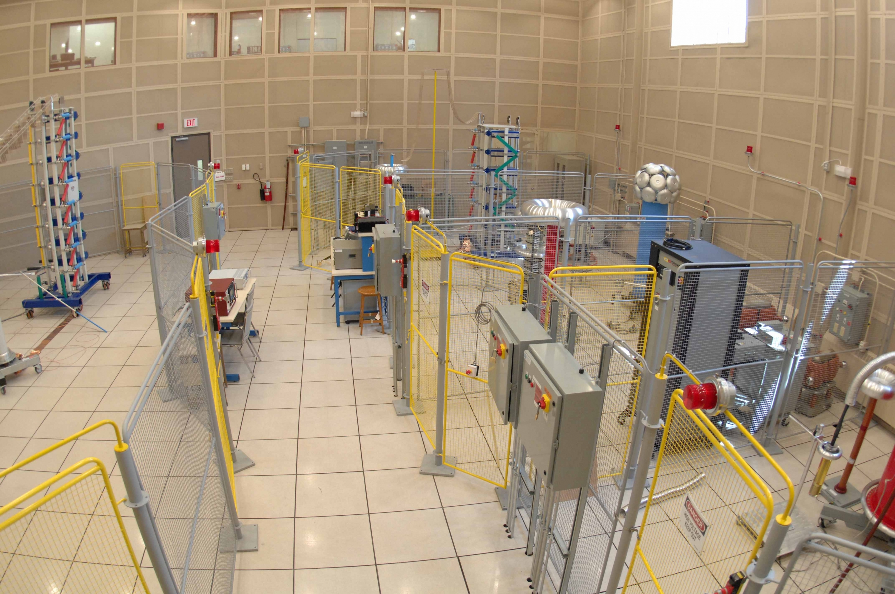
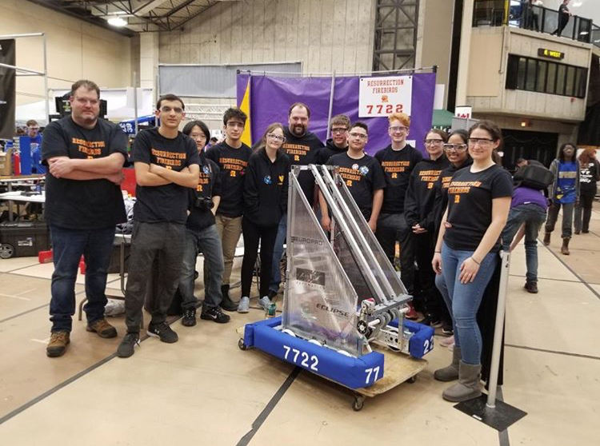

Tech Projects/Experiences
None-Related Tech Projects/Experiences
Janaury 2020
Soldered a 555 time IC (NE555), 4017 counter IC, resistors (5mm: 330 x3, 470, 10k x3), diodes (D035-7), and LEDs (5mm) after having
designed a schematic diagram on KiCad to organize the different pathways. The 555 timer provides clock pulses at 5kHz to allow the 4017
counter to have a total of 10 outputs. Output 6 is designed to reset as it is a dice.

Photo: Digital Electronic Dice
Janaury 2020
Designed a math calculator for reciprocal, radical, and quadratic functions. The buttons were created using


Photo: VBA reciprocal code, Quadratic, Radical, and Recirocal sheet
Janaury 2020 - July 2020
During highschool I shadowed under an Electrical Engineering professor at the University of Waterloo’s High Voltage Lab began when I took the initiative to present my agenda to the professor. Soon I began learning the fundamentals of RLC (resistance, inductance, and capacitors), and implementing computer models of electromechanical systems to actual Electrical Systems. This tenureship challenged me to research independently in preparation for upcoming experiments; therefore, allowing me to explore, manage my time, and problem solve to help build my skill base as a tech savvy student.

Photo: HVEL Waterloo
Janaury 2020
As a member of Resurrection Catholic Secondary School's FRC Team we won a regional tournament as a rookie team in 2019. I contributed to the drivetrain of the robot in C++ and helped code an autonomous CAN program, involving encoders, and gyro sensors to continuously improve. I also designed an FRC game piece for our team to practice with.

Photo: University of Waterloo Regional Competition 2019
Check out my personal non-tech related experiences below .
September 2018 - Present
Coached kids ranging from age 5-16 in technical and tactial sessions. My mission is to work with boys and girls of different soccer levels and increase their overall soccer IQ and individual performance on the pitch. By demonstraitng excellent proffesionalism, I have always been prepared for each session, organized teams, ran sessions on my own, distrubted apparal, and completed routinely report cards for each player. Not only do I coach soccer techniques, but my goal is teach respect, honesty, collaberation and care to each player as they continue to grow as players and people.
Co-Chair 2019-2020, Member 2018 - 2019
Attended weekly meetings diligently and took part in city council planning meetings. I also helped organize the Kitchener Youth awards in 2019. In 2020 (before Covid) my team and I were creating a workshop to help present the risks of nicotine and vaping to students.
To get in touch, you can email me.